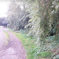
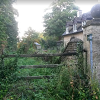
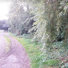
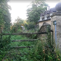

The above map shows all Public Footpaths and Bridleways that start or end within Souldern (including those that just start at the Parish Boundary).
Any problems with access to these Rights of Way may be reported to
Beth Rutterford,
who is the County Area Field Officer for North East Oxfordshire.
Any non urgent reports are best submitted by creating a login account and selecting the Report a Problem
menu item on the
Countryside Access Map
on the County Council website.
Alternatively, for Rights of Way within Souldern, (numbered 351/ 1 to 23) any queries of a non urgent or serious nature may be addressed to Katy Draper, who is the Parish Path Warden for Souldern.
Additional routes not in the above map as they are not footpaths, or
not within the Parish, but listed here as they connect with many of
the above footpaths.
The above map is based on an Open Streetmap mapping with additional footpaths, and interactive representation of the footpaths added. Every care has been taken to be accurate, but it should not
be taken as an authoritative representation of rights of way. Definitive footpath maps are held by each county. Oxfordshire makes its maps available on the web, Northamptonshire does not but information is provided as below.
 Souldern Viaduct
Lifting Bridge
Canal Towpath
Aynho Via Souldern Church
Souldern Viaduct
Lifting Bridge
Canal Towpath
Aynho Via Souldern Church
 Aynho Via Souldern Mill
Hackertys Way
Upper Souldern Grounds to Somerton Road
Somerton Road to Heyford
Somerton Road to Fritwell
Church Lane to B4100
Fox Lane to Foxhill Lane bridleway
Foxhill Lane bridleway
Foxhill Lane to Crown Cottage
Souldern Mill to Aynho Wharf
Upper Souldern Grounds to Somerton
Foxhill Lane to Fritwell Road
B4100 to Croughton
B4100 to Tusmore
Chadwell to Upper Aynho Grounds
Wharf Lane to Souldern Grounds Lane
Wharf Lane to The Green
The Green to M40
Wharf Farm to Clifton
Wharf Lane to Parish Boundary
Hill House to Fritwell
Wharf Lane
Aynho Via Souldern Mill
Hackertys Way
Upper Souldern Grounds to Somerton Road
Somerton Road to Heyford
Somerton Road to Fritwell
Church Lane to B4100
Fox Lane to Foxhill Lane bridleway
Foxhill Lane bridleway
Foxhill Lane to Crown Cottage
Souldern Mill to Aynho Wharf
Upper Souldern Grounds to Somerton
Foxhill Lane to Fritwell Road
B4100 to Croughton
B4100 to Tusmore
Chadwell to Upper Aynho Grounds
Wharf Lane to Souldern Grounds Lane
Wharf Lane to The Green
The Green to M40
Wharf Farm to Clifton
Wharf Lane to Parish Boundary
Hill House to Fritwell
Wharf Lane
 nbw/1 Nancy Bowles Wood
nbw/1 Nancy Bowles Wood 351/1 Souldern Viaduct
351/1 Souldern Viaduct 351/2 Wharf Farm to Clifton
351/2 Wharf Farm to Clifton 351/3 AB8 Hackertys Way
351/3 AB8 Hackertys Way 351/4 AB12 Chadwell to Upper Aynho Grounds
351/4 AB12 Chadwell to Upper Aynho Grounds 351/5 AB5 Aynho Via Souldern Church
351/5 AB5 Aynho Via Souldern Church 351/6 Church Lane to B4100
351/6 Church Lane to B4100 351/7 Foxhill Lane to Crown Cottage
351/7 Foxhill Lane to Crown Cottage 351/8 Foxhill Lane to Fritwell Road
351/8 Foxhill Lane to Fritwell Road 351/10 349/2 Upper Souldern Grounds to Somerton
351/10 349/2 Upper Souldern Grounds to Somerton 351/11 Lifting Bridge
351/11 Lifting Bridge 351/12(a) The Green to M40
351/12(a) The Green to M40 351/12(b) Upper Souldern Grounds to Somerton Road
351/12(b) Upper Souldern Grounds to Somerton Road 351/13 Foxhill Lane bridleway
351/13 Foxhill Lane bridleway 351/14 AB7 Aynho Via Souldern Mill
351/14 AB7 Aynho Via Souldern Mill 351/16 B4100 to Croughton
351/16 B4100 to Croughton 351/17 Wharf Lane to The Green
351/17 Wharf Lane to The Green 351/18 Wharf Lane to Souldern Grounds Lane
351/18 Wharf Lane to Souldern Grounds Lane 351/19 Canal Towpath
351/19 Canal Towpath 351/20 Wharf Lane to Parish boundary
351/20 Wharf Lane to Parish boundary 351/21 The Tchure
351/21 The Tchure 351/23 Fox Lane to Foxhill Lane bridleway
351/23 Fox Lane to Foxhill Lane bridleway AB9 Souldern Mill to Aynho Wharf
AB9 Souldern Mill to Aynho Wharf 219/2 Somerton Road to Heyford
219/2 Somerton Road to Heyford 219/3 Hill House to Fritwell
219/3 Hill House to Fritwell 219/4 Somerton Road to Fritwell
219/4 Somerton Road to Fritwell 367/15 B4100 to Tusmore
367/15 B4100 to Tusmore whl-1 Wharf Lane
whl-1 Wharf Lane